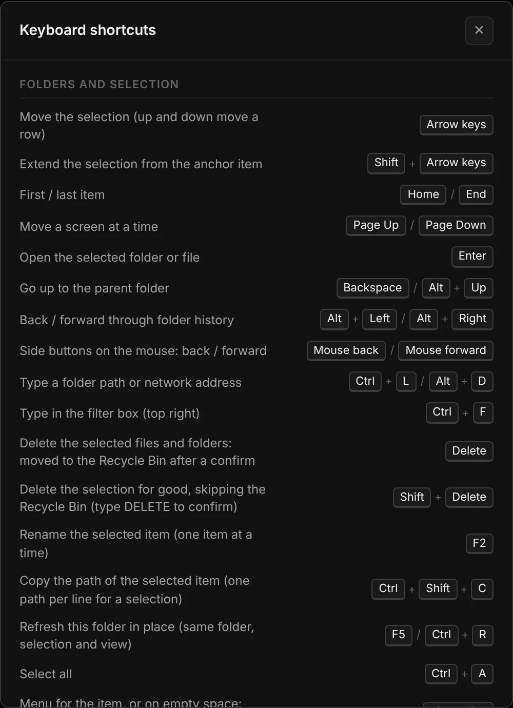

Every key the app handles, grouped by screen. Type in the box to find one, or press / to search the whole guide.
Press ? or F1 in the app to see the same list. The question-mark Help button in the top bar opens this whole guide in your browser (no key is needed for it). The list below is generated from the source, so it matches what the app does.

The card in the app. Press Esc to close it.
102 shortcuts
Folders and selection
Arrow keys
Move the selection (up and down move a row)
Shift+Arrow keys
Extend the selection from the anchor item
HomeorEnd
First / last item
Page UporPage Down
Move a screen at a time
Enter
Open the selected folder or file
BackspaceorAlt+Up
Go up to the parent folder
Alt+LeftorAlt+Right
Back / forward through folder history
Mouse backorMouse forward
Side buttons on the mouse: back / forward
Ctrl+LorAlt+D
Type a folder path or network address
Ctrl+F
Type in the filter box (top right)
Delete
Delete the selected files and folders: moved to the Recycle Bin after a confirm
Shift+Delete
Delete the selection for good, skipping the Recycle Bin (type DELETE to confirm)
F2
Rename the selected item (one item at a time)
Ctrl+C
Copy the selected files and folders (File Explorer can paste them too)
Ctrl+X
Cut the selected files and folders (they move when you paste)
Ctrl+V
Paste into this folder: names already taken get a number, or you can choose Replace
Ctrl+Shift+N
Make a new folder here and name it
Ctrl+Shift+C
Copy the path of the selected item (one path per line for a selection)
F5orCtrl+R
Refresh this folder in place (same folder, selection and view)
Ctrl+A
Select all
Right-click
Menu for the item, or on empty space: Refresh, Paste, New folder
Click
Select one item
Ctrl+Click
Add or remove one item
Shift+Click
Select a range
Ctrl+Shift+Click
Add a range to the selection
Drag
Box select: drag on empty space
Ctrl+Mouse wheel
Resize thumbnails (Large icons view)
Inspector drawer
IorAlt+Enter
Show or hide the Inspector: details of the selected file, beside the grid
Any viewer
Esc
Close the viewer (leaves full screen first)
Quick Look
Space
Open the selected file in a small floating preview (audio and video start playing)
SpaceorEsc
Close the floating preview
Arrow keys
While the preview is open, move through the folder and the preview follows
Double-click
Open the file in the full viewer (also from the floating preview)
Image and texture viewers
LeftorRight
Previous / next image or texture
Z+Drag
Zoom: hold Z and drag (image viewer)
Ctrl+0
Fit to screen (or hold Z and press 0)
Video and image sequences
Space
Play / pause
LeftorRightor,or.
Step one frame back / forward (Shift + Left / Right: one second)
HomeorEnd
First / last frame (image sequences)
Ior[
Set the in point of the loop
Oor]
Set the out point of the loop
\
Clear the loop
S
Snapshot the current frame
F
Full screen
1 – 6
Show RGB, R, G, B, alpha or luminance only
C
Cycle through the channel views
E+Drag
Exposure: hold E and drag
E++orE+-
Step exposure by 0.5 while E is held
E+0
Reset exposure while E is held
Z+Drag
Zoom: hold Z and drag
Z+0
Reset zoom while Z is held
Audio player
Space
Play / pause
LeftorRight
Back / forward 5 seconds
L
Loop on / off
PDF viewer
Page DownorSpace
Next page
Page UporShift+Space
Previous page
HomeorEnd
First / last page
UporDown
Scroll a little
LeftorRight
Previous / next file
+or-
Zoom in / out
Ctrl+0
Fit width
Ctrl+1
Actual size (100%)
F
Fit page
R
Rotate 90 degrees
Markdown viewer
Page DownorSpace
Scroll down a screen
Page UporShift+Space
Scroll up a screen
HomeorEnd
Top / bottom of the document
UporDown
Scroll a little
LeftorRight
Previous / next Markdown file in the folder
Backspace
Back to the document you followed a link from
+or-
Larger / smaller text (also Ctrl + mouse wheel)
Ctrl+0
Reset the text size
O
Show / hide the outline of headings
S
Switch between the formatted page and the Markdown text
3D model viewer
F
Frame the model
O
Show / hide the outliner (prim tree; click a prim to select and frame it)
3
Smooth preview on / off (subdivides the meshes on screen, like Maya)
U
UV view on / off (shows the UV layout of the model or the picked object)
C
Random colour per mesh on / off
Numpad 1orNumpad 3orNumpad 7
Front, right or top view (Ctrl: back or left for 1 and 3)
Numpad 5
Toggle orthographic view
HDR and EXR inspector
Z+Drag
Zoom: hold Z and drag
0
Reset zoom
E+Drag
Exposure: hold E and drag
E++orE+-
Step exposure by 0.5 while E is held
E+0
Reset exposure while E is held
V
Flip vertically
F
Fit view
W
Wipe on / off
P
Probes on / off
IorN
Show / hide the sidebar
Compare
Space
Switch between A and B (images and 3D models)
X
Switch between A and B (video)
1or2or3or4
Wipe, split, toggle and diff modes (4 is not for 3D models)
R
Reset the view (F also does it for 3D models)
Space
Play / pause the video compare
LeftorRight
Step one frame in the video compare (Shift: one second)
Home
Back to the start of the video compare
Menus and the address box
Enter
Go to the path typed in the address box (Esc cancels)
Esc
Close the sort, context, label or icon menu
This list
?orF1
Show or hide this list
Esc
Close this list
No shortcut matches. Try a shorter word, or search the whole guide with /.